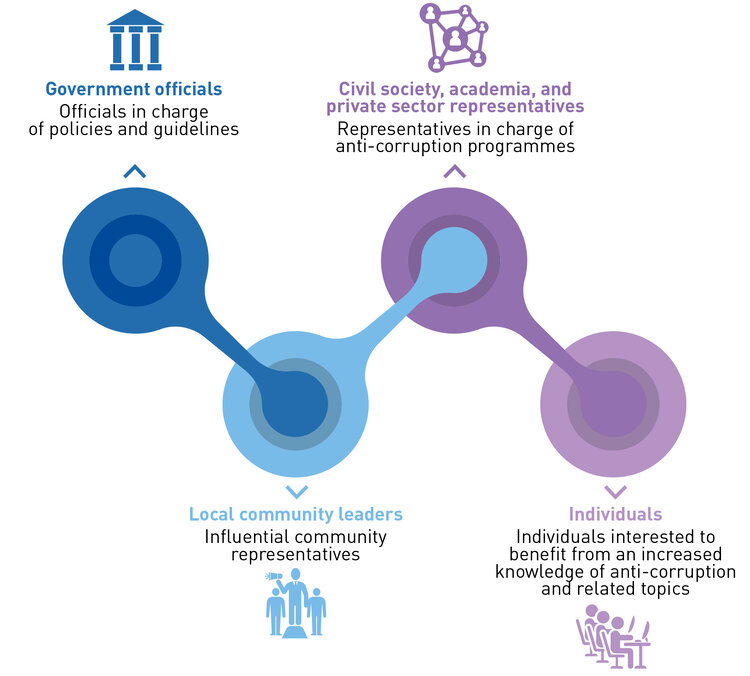

Under trainings and resources, it gathers existing information from UN entities, from
the scope of their respective competences. It has been included a brief explanation of
the material, together with a picture and the official link that will take the visitors to the
specific webpage where they could find more detailed information. Under videos and
websites, you will find information from different organizations and entities.
The intellectual property as well as the responsibility of the contents and running the
trainings are on the entities in whose official webpages the information is available.
This hub is positive for making visible existing efforts and for complementing them.
This is a public platform open for all.
